Emagrecimento
Perda de gordura com treino de força e condicionamento, sem ficar refém da balança.
Emagrecimento, hipertrofia e prevenção de lesão, começando por uma avaliação física e postural completa. Treino certo, execução correta e acompanhamento de perto.
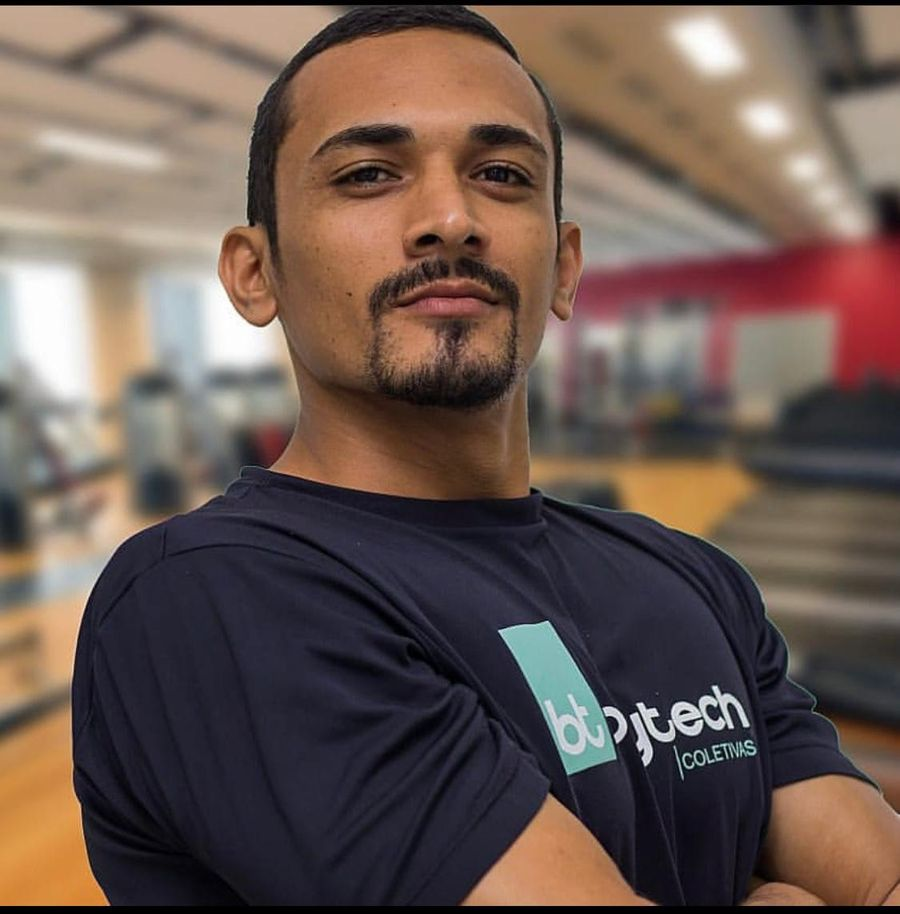
Perda de gordura com treino de força e condicionamento, sem ficar refém da balança.
Ganho de massa muscular com técnica, progressão de carga e execução corrigida a cada série.
Avaliação postural e exercícios para corrigir a hipercifose, entre outros desvios posturais, e voltar a treinar sem dor.
Treino seguro e adaptado, inclusive para alunos acima dos 60 e 70 anos.
Arraste a barra de cada foto para comparar o antes e o depois de alunos acompanhados pelo Júnior.
“Podem questionar meus métodos, mas não podem questionar meus resultados.”Júnior Oliveira
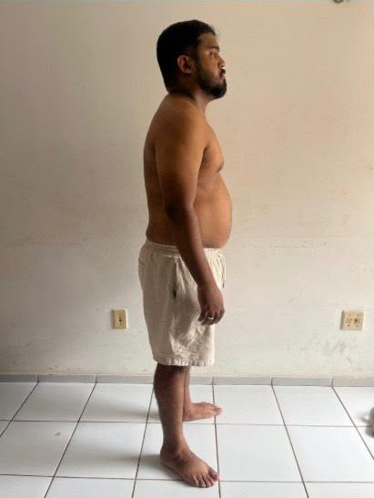
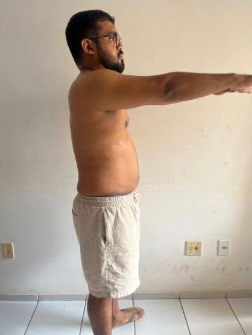
Jan/2026Abr/2026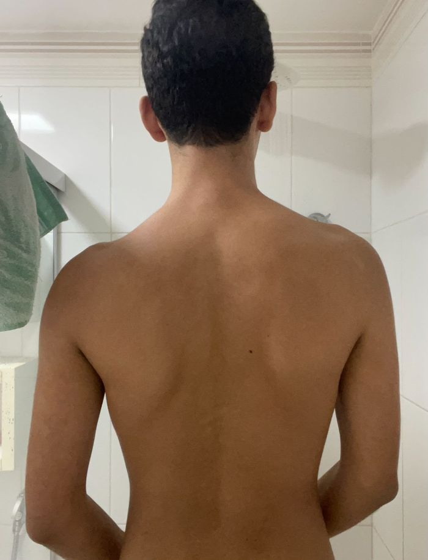
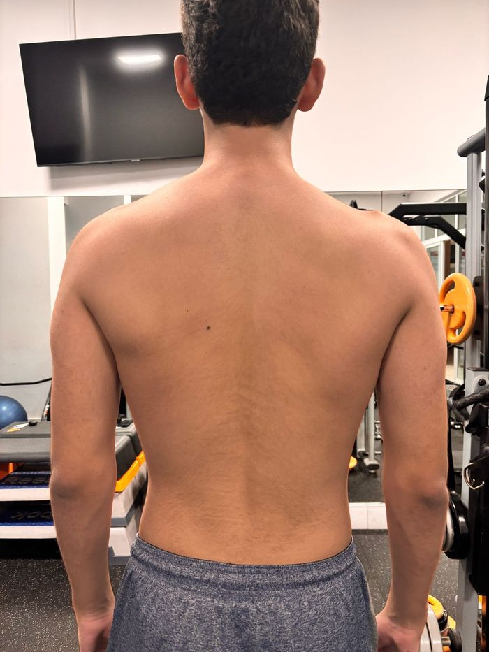
AntesDepois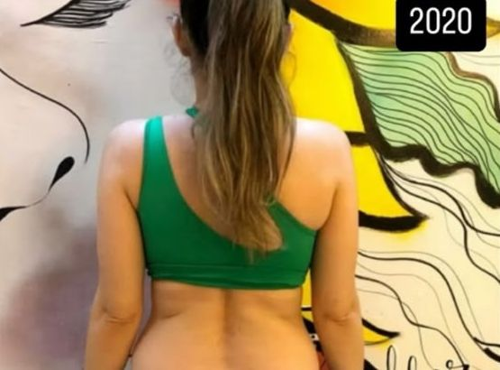
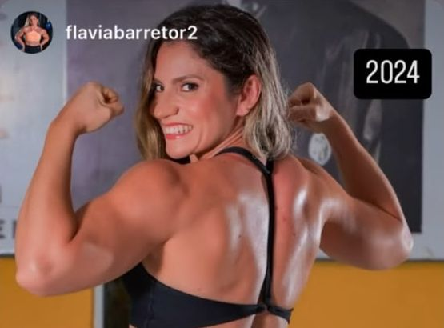
20202024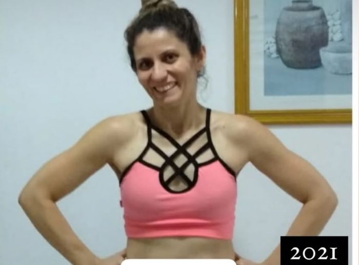
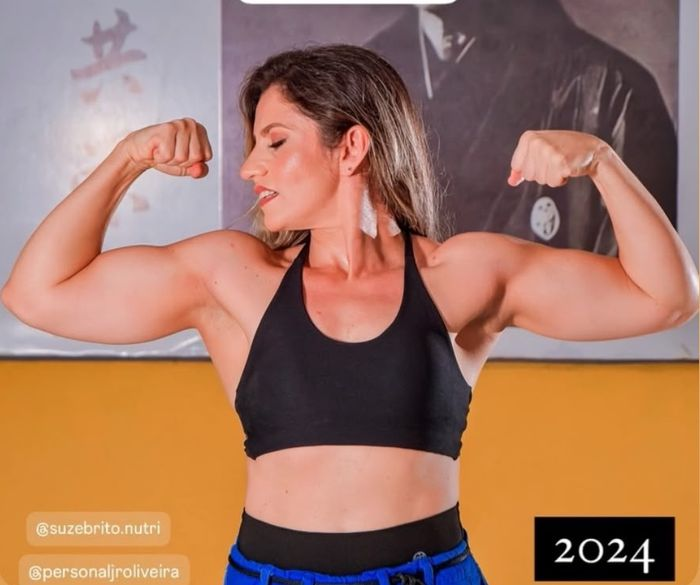
20212024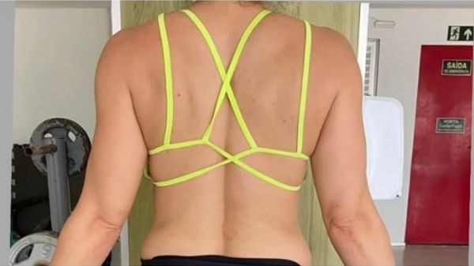
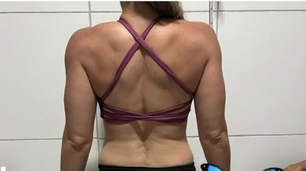
Início60 diasFotos dos treinos, dos alunos e dos bastidores, postadas pelo próprio Júnior.
Responda e veja o plano indicado. Depois é só mandar para o Júnior e marcar sua avaliação física e postural.
O número na balança não conta a história toda. O que importa é a composição do corpo, a força, a disposição e a saúde. É isso que o treino acompanha.
Medidas, composição corporal, postura e histórico de lesões.
Treino montado para o seu objetivo, sua rotina e o seu corpo.
Acompanhamento de cada exercício para ter resultado sem se machucar.
A cada ciclo, novas medidas para ver a evolução e ajustar o treino.
Acompanhamento individual na academia, do aquecimento à última série.
Treino no celular, com vídeos dos exercícios e ajustes pelo WhatsApp.
Para quem quer saber onde está e o que precisa corrigir antes de começar.
Um dos melhores exercícios para quem tem os ombros e as costas curvados para a frente.
Ver no Instagram → ExecuçãoCom que frequência seu personal corrige sua execução? Detalhes fazem a diferença no resultado.
Ver no Instagram → HábitosBeber mais água, 30 minutos de atividade, mais fruta, sono de qualidade e mais proteína.
Ver no Instagram →Coach e personal trainer em São Luís. Trabalha com saúde, hipertrofia e emagrecimento, com atenção especial à postura e à prevenção de lesões, para alunos de todas as idades.
O primeiro passo é a avaliação física e postural. Marque a sua e saia com o caminho claro até o seu objetivo.
Agendar avaliação